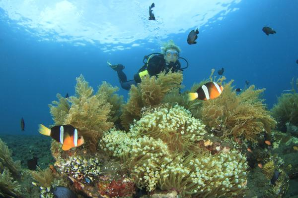

1. Introducción |
|---|
2. Biografía |
3. Jornada laboral |
4. Premios |
La oceanografía es un campo de la ciencia que estudia los mares, océanos y todo lo que se relaciona con ellos, es decir, la estructura, composición y dinámica de dichos cuerpos de agua, incluyendo desde los procesos físicos, como las corrientes y las mareas, hasta los geológicos, como la sedimentación o la expansión del fondo oceánico, o los biológicos. La oceanografía se divide en muchas ramas, entre ellos en oceanografía física, oceanografía química, oceanografía geológica, u oceanografía biológica.

Cristina Romera Castillo nació en Jaén (España) en 1982. Desarrolló un interés temprano por la ciencia que la llevó a especializarse en el estudio de los océanos. Se graduó en Química por la Universidad de Jaén y realizó el doctorado en el Instituto de Ciencias del Mar de Barcelona, centrándose en el estudio de la materia orgánica disuelta en el océano. Además, realizó estancias de investigación en centros de prestigio mundial, como la Universidad de Miami y la Universidad de Viena. Su trabajo actual se desarrolla en el Instituto de Ciencias del Mar de Barcelona. Sus investigaciones principales se centran en:
Biodegradación de Plásticos: Estudia cómo las bacterias marinas interactúan con el plástico y si son capaces de degradarlo.
Liberación de Carbono: Ha descubierto que los plásticos vertidos al mar liberan grandes cantidades de carbono orgánico, lo que altera el ciclo del carbono y afecta a la base de la cadena alimentaria marina (el fitoplancton y las bacterias).
Microplásticos: Analiza la fragmentación de los residuos y cómo estos se distribuyen en las diferentes capas del océano.
Cristina Romera Castillo se embarca en buques de investigación, como el famoso Hespérides, durante semanas o meses. Se dedican a la recogida de muestras, mediante lanzamientos de botellas especiales a profundidades de miles de metros para recoger agua de distintas zonas del océano. Más tarde, realizan un análisis en tiempo real, que es la parte del trabajo que se hace en el mismo barco para evitar que las muestras se contaminen o cambien sus propiedades.
Una vez en el Instituto de Ciencias del Mar (ICM-CSIC), su trabajo se vuelve muy técnico: exponen diferentes tipos de plástico (bolsas, envases, redes) a la luz solar y al agua de mar para ver qué sustancias químicas sueltan, investigan qué tipos de bacterias marinas son capaces de "comerse" el plástico o sobrevivir a los químicos que este libera y utilizan herramientas de análisis químico para medir cantidades minúsculas de carbono y compuestos orgánicos.
Una vez recogidos los datos, deben realizar un informe y dar a conocer sus estudios. Esta es la parte menos visible pero más importante para la ciencia. Utilizan modelos matemáticos para entender cómo el plástico que se degrada en el mar afecta al calentamiento global, y por último, publican sus hallazgos en revistas científicas para que otros investigadores y gobiernos puedan tomar medidas basadas en datos reales.
En último lugar, como figura pública de la ciencia, también dedica tiempo a explicar a políticos y organizaciones por qué es urgente reducir el uso de plásticos de un solo uso y a escribir libros como Antropocéano o dar charlas para que el público general entienda que el plástico no solo es "basura visual", sino un problema químico invisible.
| Premios internacionales | Premios nacionales |
|---|---|
| Young Investigator Award, universidad de Viena (2017) | Reconocimiento Alumni "Paseo de la Fama" de la Universidad de Jaén (2025) |
| Raymond L. Lindeman Award (2020) | Premio L'Oréal-UNESCO "For Women in Science" (2019) |
| L’Oréal-UNESCO International Rising Talents (2020) |